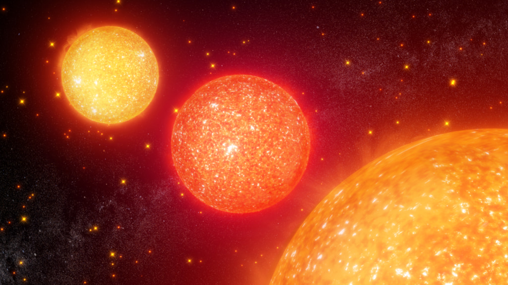
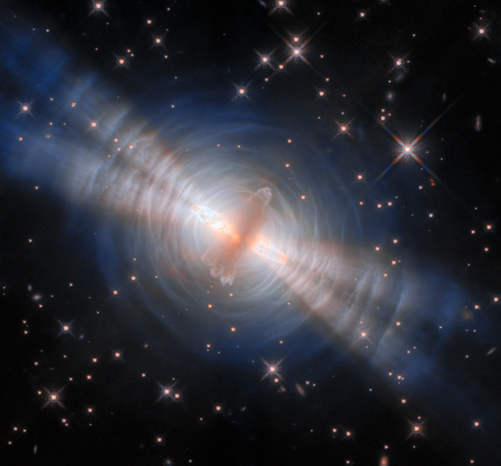
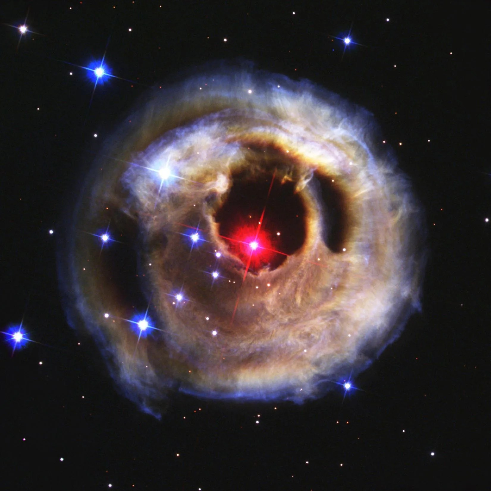
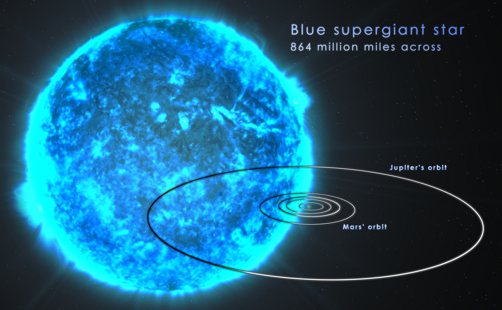

IMAGE: Up close of three Red Giants in a line with a black background full of stars. | IMAGE CREDIT: NASA's Goddard Space Flight Center/Chris Smith (KBRwyle)
IMAGE: The Egg Nebula | IMAGE CREDIT: NASA, ESA, Bruce Balick (UWashington)
IMAGE: The star V838 Monocerotis | IMAGE CREDIT: NASA, ESA, and The Hubble Heritage Team (STScI/AURA)
IMAGE: Blue Supergiant size comparison. | IMAGE CREDIT: NASA's Goddard Space Flight Center/S. Wiessinger
IMAGE: Red giant stars near and far sweep across the sky in this illustration. | IMAGE CREDIT: NASA's Goddard Space Flight Center/Chris Smith (KBRwyle)
Red GiantThe transformation from a main sequence star to a giant. This star comes from the swelling up of the star's outer layers.
IMAGE: The Egg Nebula | IMAGE CREDIT: NASA, ESA, Bruce Balick (UWashington)
AGB StarThe more extreme stage of giant stars. AGB stars shed their outer layers into carbon-rich cosmic dust.
IMAGE: The star V838 Monocerotis | IMAGE CREDIT: NASA, ESA, and The Hubble Heritage Team (STScI/AURA)
Red SupergiantA supergiant that forms from massive main sequence stars. Such as massive white or blue stars. These stars are essentially nearing their end in a massive explosion.
IMAGE: Blue Supergiant size comparison. | IMAGE CREDIT: NASA's Goddard Space Flight Center/S. Wiessinger
Blue SupergiantA supergiant that forms from massive main sequence stars. This star is extremely bright and extremely hot, essentially burning at full power until its end in a massive explosion.